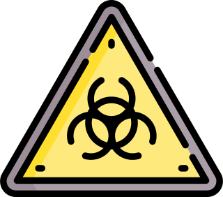

Experimental work was carried out in a Biosafety Level 1 laboratory with organisms belonging to the white list.
Experimental work was carried out in a Biosafety Level 1 laboratory with organisms belonging to the white list.
Training and supervision
Before starting the laboratory work, all members of our team had successfully passed the safety and security training. While working, our lab members are constantly guided and supervised by our instructors. We strictly follow the norms and regulations of the Institute of Technology for experimental work. If the strain developed will later be used in industrial bioreactors, then we need to further consider the possible risks to humans and the environment
Organisms
We use non-pathogenic organisms (Saccharomyces cerevisiae and Escherichia coli) that belong to the white list in order to make the experimental work and subsequent implementation safer. We follow biohazard waste disposal rules to ensure that no modified cells are released from the lab. If the strain developed will later be used in industrial bioreactors, then we need to further consider the possible risks to humans and the environment.
Safety of the final product
The Atlantic cod trypsin has been previously used in biomedical studies (Gudmundsdóttir et al., 2013) and is reported as non-toxic (Gudmundsdóttir et al., 2013). It has shown promising efficiency in the SALSA degradation kinetic modeling (please, refer to the Modeling page). Trypsin’s normal working pH level, which is in a range 7-9 units, (Lam et al., 2012) differs significantly from the gastrointestinal acidic pH, which range is 1.0-2.5 units (Evans et al., 1988).

Trypsin protease gets fully inactivated at pH 4 (Review of Proteins & Enzymes, n.d.), thus, the protease will not be active in the gastrointestinal tract. After incubation in the intestinal juice for 30 minutes, only <5% of the enzyme can be
active (Wohlman et al., 2016). There is a difference between the neutral environment (pH 7) of the esophagus (Tutuian & Castell, 2006) and acidic pH in the stomach. As an additional safety consideration to experimentally examine the possibility
of some amount of the enzyme being absorbed in the esophagus, we can implement an addition of non-toxic irreversible trypsin inhibitor, named α1-antitrypsin (NM & SG, 2007). α1-antitrypsin fully inactivates the enzyme and reduces the risk
of cleaving other proteins, as enzyme activity is limited to a short time period of staying in the mouth. The potential toxicity of the engineered protease will need further examination
Also, the presence of some allergens and insufficient purity are possible sources of risks of our final product. Since our final product contains only the purified protease in a cell free solution, there is a negligible risk of the GMO being released from the production process. To further reduce this risk, our team will implement a multistep kill switch to ensure that GMO yeast will die in natural environmental conditions
Safety of the final product
According to Safc Biosciences Material Safety data sheet, these are general instructions when working with trypsin and in case of:
a) Trypsin contact with eyes: it is obligatory to flush thoroughly with water and contact a physician (Trypsin-EDTA Solution 1X, 2006).
b) Trypsin contact with skin: wash the affected area with soap and water. If irritation will occur,
contact a physician (Trypsin-EDTA Solution 1X, 2006).
c) Accidental swallowing of trypsin: rinse the mouth with fresh water and contact a physician (Trypsin-EDTA Solution 1X, 2006).
d) Accidental inhalation of trypsin: take the
affected person to fresh air and contact a physician (Trypsin-EDTA Solution 1X, 2006). If breathing becomes difficult, give oxygen. If breathing stops, give artificial respiration (Trypsin-EDTA Solution 1X, 2006).
Trypsin-EDTA Solution 1X. (2006). www.safcbiosciences.comGudmundsdóttir, Á., Hilmarsson, H., & Stefansson, B. (2013, February 28). Potential use of Atlantic cod trypsin in Biomedicine. BioMed Research International. Retrieved October 16, 2021, from https://www.hindawi.com/journals/bmri/2013/749078/.